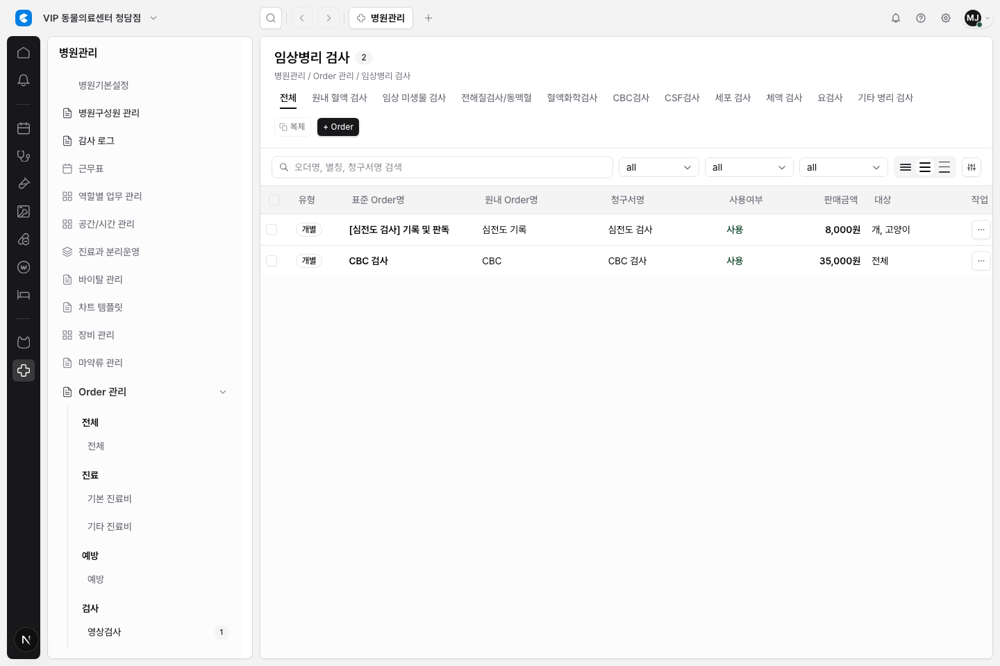

DEN-269 병원관리 Order 카탈로그 테이블 Primitive 적용
무엇을 바꿨나
병원관리의 Order 관리 목록에 DEN-264에서 만든 EmrTableHeaderCell과
EmrTableCellText를 제한 적용했다. 이번 변경은 병원관리 Order 카탈로그 테이블에만
국한되며, 전체 테이블 일괄 전환이나 새 정렬/필터/resize 동작 구현은 포함하지 않았다.
왜 중요한가
병원관리 Order 카탈로그는 임상 오더명, 원내명, 청구서명, 판매금액, 사용여부가 한 화면에서 함께 읽혀야 하는 dense master-data 표다. 공통 primitive를 적용해 헤더 역할과 셀 텍스트 줄 수 정책을 명시해 두면, 이후 다른 테이블로 확장할 때 각 표가 임의의 truncate/class 조합으로 흩어지는 일을 줄일 수 있다.
컬럼 역할
| 컬럼 | 헤더 역할 | Resize 정책 | 셀 텍스트 정책 |
|---|---|---|---|
| 선택 | static | none | checkbox control |
| 유형 | filterable | data-column | badge |
| 표준 Order명 | sortable | data-column | two-line-if-long |
| 원내 Order명 | sortable | data-column | two-line-if-long |
| 청구서명 | sortable | data-column | two-line-if-long |
| 사용여부 | filterable | data-column | one-line |
| 판매금액 | sortable | data-column | one-line |
| 대상 | filterable | data-column | one-line |
| 작업 | static | none | row action menu |
보존한 동작
- 병원관리 카테고리/하위 카테고리 이동
- 검색, 사용여부/청구/업무유형 필터 컨트롤
- 행 선택과 bulk action 표시
- Order drawer 열기, 수정, 삭제, 행 action menu
- mock auth/session 기반 workspace 진입
검증
npx eslint src/features/hospital-admin/module.tsx tests/hospital-admin.spec.ts통과npx tsc --noEmit통과PLAYWRIGHT_BASE_URL=http://127.0.0.1:3079 npx playwright test tests/hospital-admin.spec.ts -g "shared header and cell text primitives"통과PLAYWRIGHT_BASE_URL=http://127.0.0.1:3079 npx playwright test tests/hospital-admin.spec.ts7 passednpm run lint통과, 기존 warning 5개 유지npm run docs:check통과git diff --check통과
Evidence
Mock auth storage state를 넣고 실제 병원관리 Order 카탈로그 화면을 캡처했다. 로그인 화면 캡처가 아니다.

범위 밖
새 sort/filter/resize 동작, 전체 테이블 일괄 적용, Supabase/DB/RLS/server enforcement, pricing/role/permission 정책 변경, DEN-250/251/264/265/266/267 상태 변경은 이번 작업 범위에 넣지 않았다.